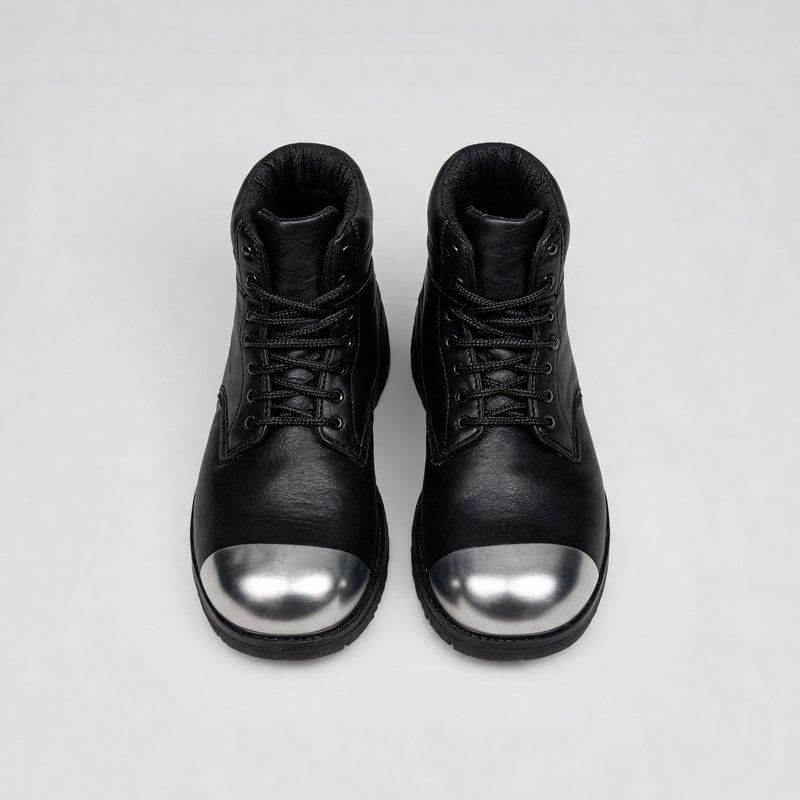
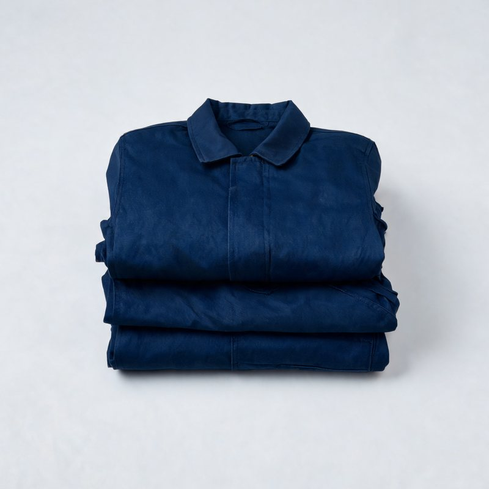

3e SEGPA · Parcours maçonnerie · Projet 1
Le mur en
parpaings
1Je découvre le bloc, le mortier et les joints croisés.
2Je lis le plan du mur.
3Je calcule le nombre de blocs.
Je réfléchis
Pourquoi un mur
ne s'écroule pas ?
Les blocs se croisent.Chaque bloc repose sur deux blocs du rang d'en dessous, et le mortier les tient ensemble.
Je découvre
Le parpaing creux
50 cmde long
20 cmde haut
15 cmd'épaisseur
≈ 15 kg : je le porte près du corps, le dos droit, les jambes fléchies. Les trous (alvéoles) le rendent plus léger.
Je compare
Quel mur est le plus solide ?
Je découvre
Le mortier de chaux
1 seaude chaux+3 seauxde sable 0/4+eaupetit à petit
Il tient sur la truelle retournée.Trop d'eau : il coule. Pas assez : il ne colle pas.
Je lis le plan
Mon mur : vue de face
4 rangs de 20 cm + 4 joints de 1 cm = 84 cm.
Je calcule
Combien de blocs ?
| Entiers | Demis |
|---|
| Rang 1 | | |
|---|
| Rang 2 | | |
|---|
| Rang 3 | | |
|---|
| Rang 4 | | |
|---|
| Total | | |
|---|
12 blocs10 entiers + 2 blocs que je coupe en deux pour faire les 4 demis.
Je réfléchis
L'ordre du travail
Touche les étapes dans l'ordre, de la première à la dernière.
Bravo ! C'est l'ordre du dossier élève.
Sécurité
Mes équipements de protection

Chaussures de sécurité

Tenue de travail
J'écris
Ce que j'ai appris
Mon mur mesure 1,52 m de long et 0,84 m de haut : 4 rangs de parpaings 50 × 20 × 15 cm.
Les joints sont croisés : chaque bloc repose sur deux blocs. C'est ce qui rend le mur solide.
Le mortier de chaux : 1 chaux, 3 sable, de l'eau petit à petit.